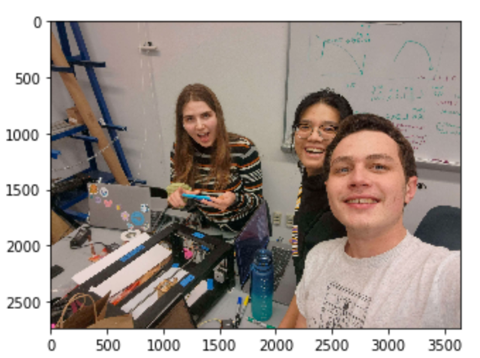
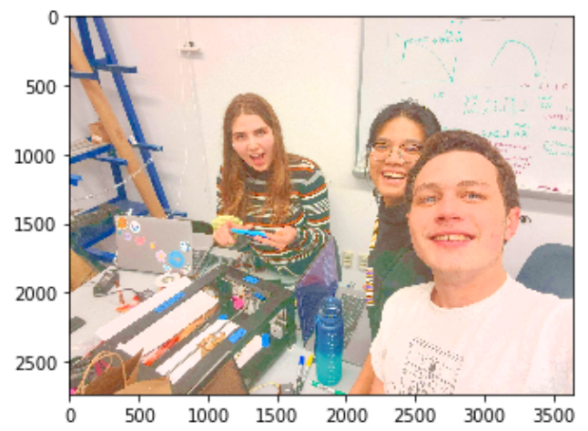
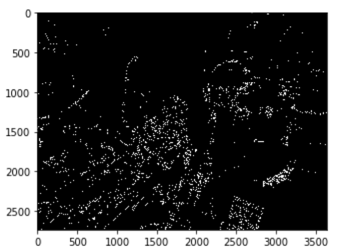
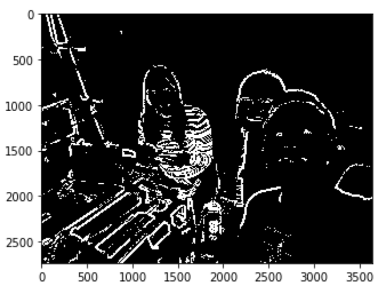

How to run
Here is the sketchy ipython
notebook for exploration of different parameter and cv functions.
To implement the edge detection script automatically, run python edge_detection.py
[image_file_path] in terminal. The file path is optional: If no file path given, the script
would start the camera system and ask the user to take a picture with space key.
To convert the generated edges to G-code convertible commands, run python generate_command.py
[binary_image_path] in terminal.
Techniques In Image Processing
There are several techniques utilized in the cv process, especially for a low-resolution image.
One issue with low resolution/ poor lighting image is the uneven background. Here is an example:

To deal with that, we could first increase the brightness: The bgr image (opencv default image
channel) is first converted to hsv color space, then we could increase the v (value) channel
then convert back to bgr to increase the brightness:

Then we need to turn the image to grayscale, grayscale is required for a majority of openCV
operations.
Now we can see the noises in the background and the points would look disconnected. There is a
built in function called Canny in openCV which is an edge detection algorithm based on change in
contrast. If we just use Canny:

Well, it doesn't look so right, does it?
So we continue with our customized edge detection process:
- First we need to dilate the image: Dilation is a morphological transformation used to
increase the size or thickness of the foreground object in an image. In most cases, dilation
is used to connect two broken objects of an image. Which is just the use case in our case if
we look at the edges from Canny.
- We save the difference between dilated and the original gray image – we only save what’s in
the front.
- Then we need to deal with the noisy background! We could apply a gaussian filter where it
blurs the image and therefore make the difference due to lighting innoticable and not
detected.
- Next we could find the difference between the product of blurring and the dilated image.
- Finally we normalize the image to increase the contrast of the output edge image:

It looks so much better now! We could also explore with different openCV functions and its
parameters (like kernel sizes) in the jupyter notebook.
Edges to G-code
Now we have the binary image which contains the edges, how can we convert lines to motor
movements?
- We first need to convert the binary image into a list of pixel coordinates in x and y. This
can be achieved by numpy.where, because a binary image is a matrix of x * y where mat[x][y]
represents if pixel point (x,y) is black or white.
- Once we have all the coordinates that should be drawn, we scale them so that the image does
not exceed the boundary of the drawing bot. We find the largest difference in x and y and
choose one axis as boundary to be scaled (depends on how we could keep the most of our
image)
- Then we group all the coordinates into groups of lines where all the coordinates in one list
would be on the same line/ curve. This is done by setting arbitrary thresholds: if 2 points
are 10 units apart in both axises, they do not belong to the same line.
- Next we find the bezier curve for each of the line, because the parsing SVG to G-code
functions take straight lines and bezier curves. This is done by a series of line fitting
and transformation functions (math).
- Now we could save the commands in a file to be converted to G-code!